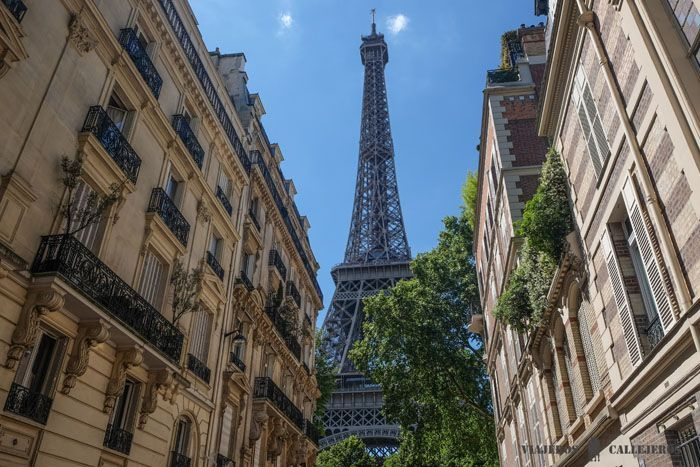
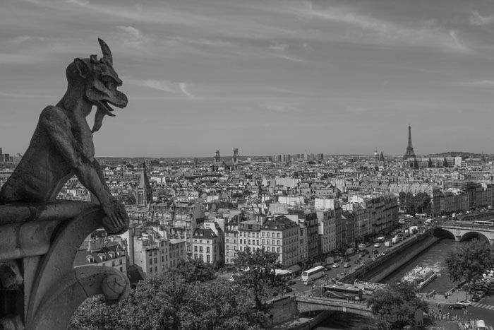

París (en francés Paris, pronunciado Acerca de este sonido es la capital de Francia y su ciudad más poblada. Capital de la región de Isla de Francia (o "Región Parisina"), constituye la única comuna unidepartamental del país. Está situada a ambos márgenes de un largo meandro del río Sena, en el centro de la cuenca parisina, entre la confluencia del río Marne y el Sena, aguas arriba, y el Oise y el Sena, aguas abajo. La ciudad de París, dentro de sus estrechos límites administrativos, tiene una población de 2.273.305 habitantes en 2015. Sin embargo, en el siglo XX, el área metropolitana de París se expandió más allá de los límites del municipio de París, y es hoy en día, con una población de 12.405.426 habitantes en 2013, la segunda área metropolitana del continente europeo (después de Londres) y la 28ª del mundo.
París, considerada como la ciudad más romántica del mundo y un lugar lleno de lugares encantadores, es para nosotros una de esas ciudades que debes visitar. Pasear por la orilla del Sena, tomarte un café en alguna de sus bonitas terrazas, subir a las torres de la Catedral de Notre Dame, ver la Torre Eiffel desde Trocadero, perderte por los barrios de Montmartre o Le Marais o embriagarte de arte en el Louvre, son sólo algunos de los muchos lugares que visitar en París imprescindibles.
Torre Eiffel
La Torre Eiffel fue creada para la Exposición Universal de París del año 1889 y aunque en un principio no gustó a los parisinos, a lo largo de los años se ha convertido en el icono de la ciudad. Sus 1.665 escalones hacen recomendable la subida en ascensor, aunque escojas la forma que escojas, lo que no puedes perderte son las vistas increíbles de la ciudad desde arriba.
Además en la torre se encuentra uno de los mejores restaurantes de París “Le 58 Tour Eiffel“, donde reservar una cena romántica, puede ser memorable y un momento inolvidable.
Las mejores vistas que puedes tener de la Torre Eiffel son desde la plaza Trocadero, aunque también tendrás muy buena perspectiva desde el Parque del Campo de Marte o desde la Rue de l´Université, desde donde la podrás contemplar entre edificios.
Como comentario te diremos que en los ascensores se forman largas colas, por las escaleras prácticamente no tendrás que esperar, por lo que si no dispones de mucho tiempo, te recomendamos reservar este tour que incluye también el crucero y la visita guiada por París. Si no quieres hacer ningún tour puedes comprar tus entradas con antelación aquí y saltarte las colas.
La Torre Eiffel está abierta todos los días de 9:00 a 24:00 horas. Si quieres subir por las escaleras estas cierran a las 18:30. A tener en cuenta que en verano se alarga el cierre hasta medianoche.


Catedral de Notre Dame
La Catedral de Notre Dame es una de las catedrales góticas más antiguas del mundo de la que se terminó su construcción el año 1272. Su interior es espectacular con grandes ventanales y una gran altura, que hacen de este lugar una de las visitas imprescindibles de la ciudad.
Nuestra parte favorita de la visita es la subida a las dos torres, en la que se encuentran sus famosas y misteriosas quimeras o gárgolas y desde donde podrás disfrutar de unas vistas maravillosas de la ciudad. La subida es un poco dura con 387 escalones, pero las vistas y las fotos que te llevarás como recuerdo, merecen la pena todo el esfuerzo.
Para subir se forman grandes colas, por lo que te recomendados que vayas lo más temprano posible.
Una buena opción para conocer mejor su historia y subir a las torres es reservar esta visita guiada en español.
Entrada incluida en el Paris Pass.
El horario de visita es de las 8:00 a las 18:45h. El fin de semana cierra a las 19:15h.